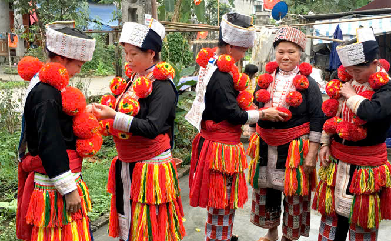

Chất liệu
Trang phục chủ yếu làm từ vải lanh, được thêu tay rất công phu,vải bông tự dệt, nhuộm màu chàm đen hoặc xanh đen đặc trưng
Dịp mặc
Trang phục truyền thống được mặc trong lễ cấp sắc (lễ trưởng thành), lễ tết và cưới hỏi , hội làng, các dịp trọng đại trong gia đình, và khi đi chợ phiên, hội xuân.
Ý nghĩa
Mang ý nghĩa tâm linh và văn hóa sâu sắc, thể hiện sự kết nối giữa con người với thế giới tự nhiên và tổ tiên. Với màu đỏ rực rỡ tượng trưng cho may mắn, hạnh phúc, kết hợp họa tiết thổ cẩm mô phỏng thiên nhiên, cây cỏ, trang phục thể hiện sự khéo léo, nét đẹp tinh tế và bản sắc riêng của cộng đồng người Dao.